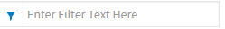
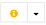
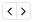
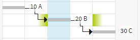
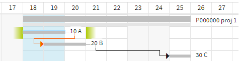

Schedule Chart¶
The primary task of the Schedule Chart function is to support project team members with detailed scheduling after the creation of project tasks. The Schedule Chart ensures this with a clear overview of the project structure using a Gantt chart. The Schedule Chart visualizes the tasks together with their dependencies and gives the project team member a quick overview of the project workflow.
The schedule data graphically represented in the time schedule is identical to the data of the same name in the task data sheet. The schedule is accessed
via the project overview in which time schedules are listed in a separate category
Via the pop-up menu of the respective project, for example, selected via the hit list. If the project contains multiple time schedules, a list of the time schedules is provided for selection.
via the navigation tree in the category Projects > Time Schedules
For each created project, a time schedule is also created automatically.
The project team member can receive more detailed information on the individual tasks using the tool tip that is shown when moving the mouse pointer over the taskbar. The start, end and duration in working days are specified here.
Buttons for Controlling and Managing the Schedule Chart
-  Filter
If you enter text here, only the tasks that contain this text are shown in the time schedule. The filter is removed again by removing the text.
- Fully expand from selected node
The button fully expands the tree structure under the marked objects.
- Show parent objects
This button includes the top parent object in the time schedule. Should this function be used on a task, for example, the top parent would be the project to which this task belongs to.
- Refresh data
Reloads all data in the time schedule. In this way, the time schedule can be refreshed if changes are made to the received data in another tab or by another user.
- Go to
Jumps to the start of the highlighted task in the Gantt chart.
- Go to today
Jumps to the current date in the Gantt chart.
- Adjust the display period to plan
Adjusts the Gantt chart to the available space so that, if possible, the entire planning period is visible. However, this is only possible if the chart does not fall under the minimum width of the calendar scale columns.
Simultaneously push the Ctrl button and the button to enlarge the calendar scale automatically so that the scheduling period is adjusted in the visible area in every case.
- Zoom
Zoom the Gantt chart scale in/out in steps using the magnifying glass buttons. In this process, the scale units (days, weeks, months, years) and the scale of the chart are changed. To adjust a desired analysis period accurately, you can also click the corresponding time unit in the calendar scale, e.g. a certain month or quarter. This is used to adjust the visible area of the Gantt chart accurately to this time range.
Creating a Time Schedule
If a time schedule is not located in a project or if you require additional time schedules, you can create a new time schedule in the Project Overview. To do so, right-click the Time Schedules category and select New... Give the new Time Schedule a name in the dialog that is displayed and specify a Primary Project. Through the Primary Project, the time schedule receives the rights context of this project so that, for example, it is visible for all team members as soon as it has the status Valid. After confirming the dialog, the new time schedule appears in the corresponding Project Structure category.
Creating Tasks in the Time Schedule
In the time schedule, you can create tasks and modify them without needing to change the project or task overview.
-  Time Schedule operations
- Klicken Sie auf das “i” um das Datenblatt des Terminplans in einem neuen Reiter anzuzeigen. Klicken Sie auf das Pfeilsymbol, um das Drop Down-Menü anzuzeigen, in dem Sie die verschiedenen Operationen des Terminplans auswählen können.
- Objektbezogene Operationen
- Klicken Sie auf das Operationen-Icon, um das Drop Down-Menü anzuzeigen, in dem Sie verschiedene Operationen für das Projekt bzw. die Aufgabe auswählen können.
You can create new tasks by highlighting a project in the time schedule and selecting Create Task) from the operation menu. The task screen, in which you can define the task’s properties, is displayed. After your confirmation, the new task is attached at the bottom of the task list in the project. To subdivide this further, highlight a task and select Create subtask). This is how you can nest tasks as deeply as you want into your project structure.
Changing a Task Position
To change the order in which the tasks are arranged, display the Position column (see Table columns). There, edit the position numbers to change the order of tasks.
Task Groups
Task groups, which are all tasks that contain subtasks, are displayed with two bars in the Gantt Chart. The same is true for projects. The top, dark bar represents the target duration, while the bottom lighter bar shows the Bottom-Up duration.
Apply bottom-up values automatically
If, in the data sheet of a task group, the option Use Bottom Up Values as Target Values is switched on, both bars are always kept synchronous.
The task group is in this case always set with Automatic Calculation.
The task group’s dates cannot be changed manually. Only a constraint (e.g. “Start no earlier than...”) can be set.
A task group’s relationships and constraints also affect all of the subtasks.
If you make changes to the subtasks that influence the dates of the task group, the target dates are adapted automatically.
Do not apply bottom-up values automatically
When in a task group’s data sheet, the option Automatically Adopt Bottom Up Values as Target is not checked, changes of the task group’s and subtasks’ target dates influence each other to a lesser extent. In this case, the top bar can possibly show different target dates than the Bottom-Up calculation of the subtasks would yield.
You can change the task group’s dates manually, without thereby changing the subtasks and vice versa.
Task group’s relationships affect (by automatic calculation) only the task group and not the subtasks.
The conflict must than be resolved manually by the project participants.
Exception: For automatically calculated subtasks with constraint type “as soon as possible”, the start date of the task group still applies as boundary condition and for subtasks with “as late as possible”, the end date of the task group.
Modifying Tasks in the Time Schedule
Multiple options are available to you to modify tasks in the time schedule.
Inline editing
Tasks can be edited directly in the Gantt chart table. In a previously highlighted task (or project), simply click in a cell, e.g. the name cell, to reach editing mode and enter the desired changes there.
Modify
Mark a task or a project in the Gantt chart table and select the Change entry from the operations menu. The Task (or Project) screen appears, in which you can apply the desired changes. You can reach the respective screen even more quickly by double-clicking a task or project in the Gantt Chart table.
More detailed information on the properties that can be changed here are described in the sections Projects and Work Breakdown Structure and management.
DragDrop
If you want to change task dates, you can also achieve this directly in the Gantt Chart by using Drag&Drop for the project and taskbars. If move the mouse pointer over a bar in the center, it transforms into a black double-arrow. Drag the bar to the left or right to move the task. While dragging the bar, you will see a preview of the exact schedule dates in the tool tip that the task receives once you release the mouse button.
To change the beginning or end of a task, move the mouse pointer over the bars at the respective end of the task. The mouse pointer changes into a white double-arrow. Now, if you drag, only the date on the end selected is changed and the duration of the task is adjusted accordingly.
Table Columns
You can configure which information is to be shown in the table section of the Gantt chart.
- Choose columns
Click the table symbol to the far right in the table header to display a list of available columns. You can place or remove a checkmark in this list for each column to define whether the column is to be displayed. By using Drag&Drop in this list, you can define the sequence of the columns. Once you have completed your desired configuration, click the save button at the bottom end of the list. The columns are now assigned accordingly.
- Minimize Columns
To quickly expand the available space for the Gantt Chart, select the Collapse symbol on the top right in the table header. This hides all table columns that are located to the right of the name column so that the Gantt Chart can occupy a wider space. By clicking the symbol again, the table is expanded back to the standard column configuration.
You can change the column width by holding the right margin of the column in the header with the left mouse button, adjusting the desired width by sliding the mouse and releasing the left mouse button.
Task Dependencies
For illustrating the process planning, tasks in the time schedule can be linked using task relationships. This makes it possible to automatically calculate the effect of a date change on the subsequent tasks. Subsequent, directly or indirectly linked tasks will have their dates automatically adjusted, where appropriate, as long as their checkbox Automatic Calculation is checked and the constraint dates allow the corresponding adjustment. All relationship conflicts, which cannot be solved by the automatic calculation algorithm, will be displayed with a red arrow.
Furthermore, task dependencies are used to control editing sequences, for example, by releasing tasks for editing and starting them only once the predecessor is complete. For example, first the “Delivery of components” task must be completed so that the “Assembly of delivered components” task can start.
The typical link types as they are used for project tasks are available:
Finish-Start, FS: The successor may only start once the predecessor is completed (normal sequence)
Start-Start, SS: The successor may only start once the predecessor has started (start sequence)
Finish-Finish, FF: The successor may only finish once the predecessor has finished (end sequence)
Start-Finish, SF: The successor may only finish once the predecessor has started (jump sequence)
You can define a relationship between two tasks by entering the corresponding acronym and row number (not position!) in the column Predecessor or respectively Successor. If the columns are not displayed, that can be changed using the column configuration.
-  Dependency Status
You can show/hide the predecessor or successor column much more quickly and conveniently by clicking the arrow pointing to the left (predecessor) or the arrow pointing to the right (successor) in the Dependency Status column. The respective column is then shown/hidden immediately.
To create a task relation, type the acronym of the link type and the row number of the other task. For example, to create a finish to start relationship between the tasks in rows 2 and 3, first check the column Successor to be displayed in the column configuration, if it’s not already. And then, in row 2 of this column, type SF3(similarly, typing SF2 in the column Predecessor of row 3 would achieve the same result)
You can also establish fixed time gaps for relationships. When between the two tasks, a gap of 5 days must be maintained, type: FS3+5d. For desired overlaps, use a negative gap: FS3-5d
When a task should have relationships to several other tasks, you can type the acronyms separated by a coma. The successor cell contains “FS3, FS5” when the task has rows 3 and 5 as successors.
- Task Dependency
In the predecessor or successor column, your entry for a new task dependency is converted into a symbol, which provides more information and operating options:
It includes the abbreviation for the link. If the row number is missing in the abbreviation, the linked task is not included in your time schedule or is located in a closed structure node.
In this case, click the link symbol to show the non-visible task or load it into the time schedule. This fixes the task to the time schedule, i.e. the pin symbol is placed in the Fix column. More information on this can be found in the Individual time schedules for multi-project planning or detail observations section.
The color indicates whether there is a schedule conflict for this task dependency. If this is the case, the symbol is red; otherwise, it is green. In the case of a schedule conflict, an exclamation point is also displayed above the link symbol.
Delete a task dependency by clicking on the X in a link symbol.
The task dependency is represented in the Gantt Chart by an arrow between the linked ends of the two tasks. If the task dependency is violated, i.e. a conflict has developed in your scheduling, the link arrow is shown in red.
- Time Constraints
Wenn Sie eine Aufgabe markieren oder mit dem Mauszeiger darüber fahren, werden Ihnen im Diagramm die Termingrenzen angezeigt, die vom Beginn bzw. Ende der Aufgabe eingehalten werden müssen, damit die Aufgabenbeziehungen erfüllt sind.
Als Termingrenzen werden der frühest mögliche Anfangstermin (Symbol nach links verblassend) und der spätestmögliche Endtermin (Symbol nach rechts verblassend) angezeigt.

Die Termingrenzen werden unter Berücksichtigung des ganzen Netzwerks berechnet, d.h.
für den Anfangstermin: Die Aufgabe könnte frühesten an der Termingrenze enden, wenn alle Vorgängeraufgaben konfliktfrei terminiert wären.
für den Endtermin: Die Aufgabe könnte spätestens an der Termingrenze enden, wenn alle Folgeaufgaben konfliktfrei terminiert wären.
Beispiel: Wen man Aufgabe A und B soweit wie möglich nach hinten schieben würde, ohne das Projektende zu verschieben, dürfte Aufgabe A spätestens am Tag 20 enden (und Aufgabe B spätestens am Tag 22).

- Die Farben des Symbols bedeuten:
- Grün: Der tatsächliche Anfang liegt nach der Anfangstermingrenze bzw. das tatsächliche Ende liegt vor der Endtermingrenze.
- Rot: Es liegt ein Terminkonflikt vor, d.h. der tatsächliche Anfang liegt vor der Anfangstermingrenze bzw. das tatsächliche Ende liegt nach der Endtermingrenze.
Zu beachten: Wenn keine Einschränkungstermine verwendet wurden, werden die Termingrenzen so angezeigt, dass Projektanfang und -ende eingehalten werden. Wenn Sie jedoch Einschränkungstermine wie Ende nicht später als oder Muss enden am verwendet haben, werden die Termingrenzen so angezeigt, dass diese Einschränkungstermine nicht verletzt werden.
- Dependency Status
The Dependency Status column provides you with a very brief overview of the presence of schedule conflicts. There, for each task, you can immediately detect whether there are schedule conflicts for other tasks, even if linked tasks are not currently visible.
A predecessor/successor symbol in red means that there is at least one conflict for a predecessor/successor.
A predecessor/successor symbol in green means that all relations to predecessors/successors are conflict-free.
A predecessor/successor symbol in white means that no relations to predecessors/successors are available.
Click the symbol to have the corresponding column displayed.
Adjustment options for tasks
Changing a task’s dates, due to its relationships, can affect the successor tasks. Here you can decide if the time schedule should only show the conflicts or carry out automatic adjustments, by activating or deactivating the checkbox Automatic Calculation.
Automatic tasks: when a task is set as automatic, the planning algorithm takes over the task’s time positioning on the basis of the linked predecessors and any constraint dates. However, a date shift will only be performed when the task has not already begun.
Manual tasks: when a task is set as manual, the planning algorithm will not change the task’s preset dates. All predecessors and successors of the task will compute their earliest start and latest finish based on the manual task’s dates and not based on its earliest or latest possible position.
Note
Note that in case of any conflicts during the automatic calculation, the constraints have priority over the relationships to other tasks. The potential relationship conflicts will be signaled with a red highlight.
Individual Time Schedules for Multi-Project Planning or Detailed Observations
The time schedule that is created automatically for each new project is not the only possible time schedule. If you require a time schedule for a multi-project view or want to create an extra time schedule for partial aspects of your project, you have the option to compile as many time schedules as desired with various content. During this process, projects and tasks can be conveniently included in multiple time schedules, because there is only one of each time schedule element and the projects and tasks are only linked to this element when being added to a time schedule.
Fixed Time Schedule Elements
To assign a time schedule element - a project or task - to a time schedule, it has to be fixed to the time schedule. You can detect fixed objects in the time schedule by locating the pin symbol in the Fix column. Fixed time schedule elements can be expanded at any time in the time schedule so that all subordinated tasks are visible in the time schedule.
Fix new time schedule elements
You can add new time schedule elements to a time schedule (fix) in the project overview. Expand the Time Schedules category. All time schedules assigned to the project are listed here. To fix tasks from the same project, drag them to the desired time schedule in the project overview. To fix other projects or tasks from other projects to the time schedule, assign a hit list or project/task overview next to it and drag the desired time schedule elements across windows to the time schedule in the project overview.
Desweiteres haben Sie die Möglichkeit im Kontextmenü des Terminplans die Operationen Projekt hinzufügen und Aufgabe hinzufügen aufzurufen, um Objekte dieses Typs auszuwählen und damit in den Terminplan aufzunehmen. Diese Operationen stehen ihnen ebenso innerhalb des geöffneten Terminplans zur Verfügung.
Fixed time schedule elements at multiple classification levels
You can also fix a task that is subordinate to a fixed task by clicking the pin symbol in the Fix column. Using the pin symbol, the task is now labeled “fixed”. If you want to collapse the higher-level time schedule element, the subordinate element is not hidden, but rather displayed at the uppermost hierarchy level. In this way, you can also ensure that certain tasks that you would like to keep displayed are never hidden.
Accordingly, a task that you display via the Link symbol in the Predecessor or Successor columns (see Task relationships) is fixed to the time schedule below. If the task was hidden because it was located in a closed task group, it is hidden at the uppermost classification level as soon as it is visible by expanding the task group within the hierarchy. If you close it again, the fixed task is attached to the bottom again as long as it is fixed.
Disconnect time schedule elements from the time schedule
To remove fixed time schedule elements from the time schedule again, click the pin symbol in the Fix column. If a parent object is not fixed either, the task disappears immediately from the time schedule.
Fix subnode
If a time schedule element is fixed to a high hierarchy level, but you only want to have a subordinate subnode in the time schedule, first fix the subordinate subtask and then remove the higher-level time schedule element from the time schedule. This hides the latter from the time schedule, but the subordinate task remains fixed.